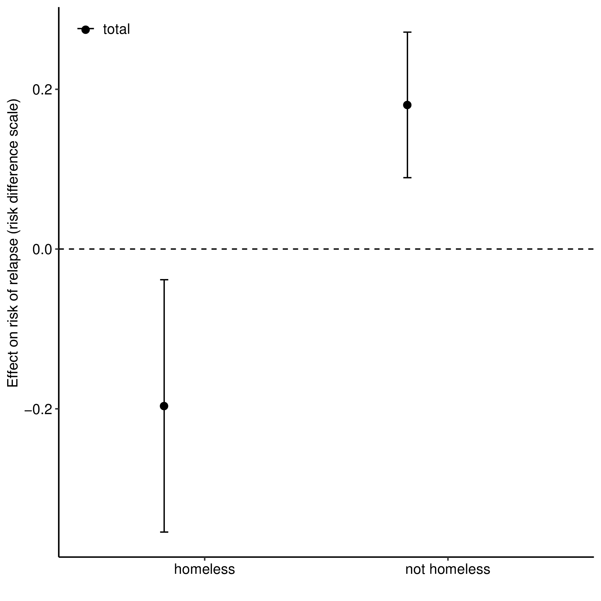

3 How to choose an estimand: Real-world example
3.1 Comparative effectiveness of two medications for opioid use disorder (OUD)

Motivation: Opposite overall treatment effects for homeless versus nonhomeless participants. This application was explored in detail by Rudolph et al. (2020).

3.1.1 Getting specific about the question
To what extent does the indirect effect through mediators of adherence, pain, and depressive symptoms explain the differences in treatment effects on OUD relapse for homeless and nonhomeless individuals?
- What estimand do we want?
- Can we set \(M=m\) (i.e., same value) for everyone?
- Are we interested in estimating indirect effects?
\(\rightarrow\) So, not controlled direct effect.
- Do we have an intermediate confounder?
- Yes, and it’s important.
- Do we have a binary treatment assignment variable and a binary intermediate confounder?
- Yes.
- Can we assume monotonicity?
- Yes.
\(\rightarrow\) So, could estimate natural (in)direct effects under monotonicity.
What if we don’t want to assume monotonicity, or if we do not have a binary treatment assignment variable and binary intermediate confounder?
\(\rightarrow\) Interventional direct and indirect effects.
- Do we want to estimate the path through treatment initiation (\(Z\))?
- Yes, so, not the conditional versions of these effects.
- Estimands:
- Direct effect: \(\E(Y_{1,G_0} - Y_{0,G_0})\)
- Indirect effect: \(\E(Y_{1,G_1} - Y_{1,G_0})\)
- Here \(G_a\) is a draw from the distribution of \(M_a\mid W\).
- Need to incorporate multiple and continuous mediators
-
What if the positivity assumption \(\P(A=a\mid W)>0\) violated?
\(\rightarrow\) Can’t identify or estimate any of the above effects
- But we can estimate the effect of some stochastic interventions, e.g., IPSIs
- Tradeoff between feasibility and interpretation
-
What if the exposure variable is continuous?
\(\rightarrow\) All the above effects are defined for binary exposures
- But we can estimate the effect of some stochastic interventions
- Work in progress (including upcoming R software)
What if the exposure is actually time-varying? What if the mediators and/or intermediate confounders are actually time-varying?